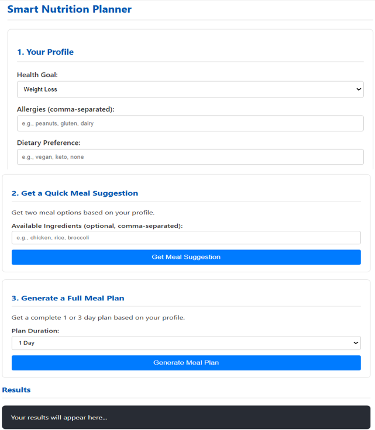
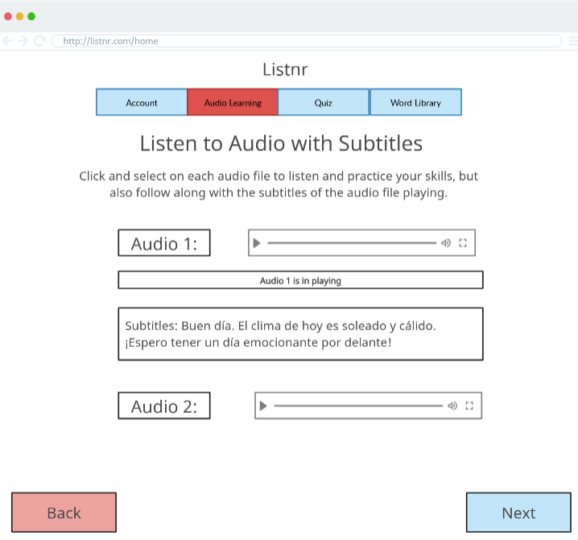

IT Course Projects:
Smart Nutrition Planner (CSI 4160 - Integrated Computing Systems)
- Built a web-based smart nutrition planning system as a group of four that delivers personalized meal and nutrition recommendations based on user preferences and dietary goals.
- Integrated the USDA FoodData Central API to retrieve nutritional data and leveraged an LLM to generate meal suggestions and responses.
- Collaborated with team members on system design, documentation, and presentations aligned with course milestones.

Listnr (CSI 3370 - Software Engineering and Practice)
- Built an audio-based language learning system designed to improve listening comprehension using real-world conversations.
- Worked on the Audio Listening and Evaluation feature, allowing users to upload or select audio and interact with subtitles.
- Collaborated with team members on design, testing, documentation, and presentations.
